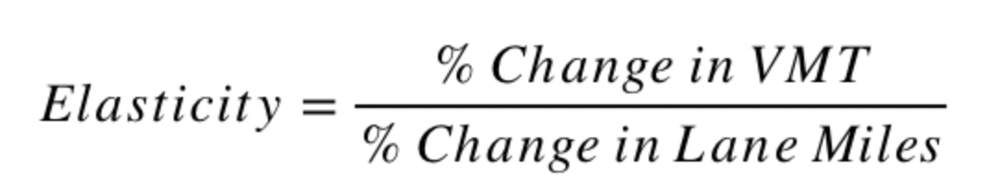

Attempts to address traffic congestion commonly rely on increasing roadway capacity, e.g. by building new roadways or adding lanes to existing facilities. But studies examining that approach indicate it is only a temporary fix. They consistently show that adding roadway capacity in congested areas actually increases network-wide vehicle miles traveled (VMT) by a nearly equivalent proportion within a few years, reducing or negating the initial congestion relief. That increase in VMT is called “induced travel.”
The induced travel concept is not new (see the “fundamental law of highway congestion” Anthony Downs suggested in 1962). Indeed, it is explained by the bedrock economic principles of supply and demand: “adding capacity decreases travel time, in effect lowering the ‘price’ of driving; when prices go down, the quantity of driving goes up” (Handy and Boarnet, 2014a).
The magnitude of the induced travel effect is commonly measured as the elasticity of VMT with respect to lane miles:
The greater the elasticity, the greater the increase in VMT from a given increase in roadway capacity. An elasticity of 1.0 indicates that a given percent increase in lane miles will cause the same percent increase in VMT.
Most recent studies have estimated elasticities in the same ballpark, despite using a range of methods to control for other VMT-inducing factors and the bi-directional relationship between VMT and capacity expansion. In general, the studies show that a 10-percent increase in roadway capacity is likely to increase network-wide VMT by 6 to 10 percent (an elasticity of 0.6 to 1.0) in the long run (5 to 10 years), with greater elasticities for expansions of major highways (e.g. interstates) than for capacity increases on other roadways. These longer-term elasticities account for short-run shifts in travel (as people take advantage of the increased capacity and travel speed by driving more), as well as longer-run dispersion of residential and business location and development.
For more information on the induced travel and other impacts of highway expansion, see Handy (2015) and Handy and Boarnet (2014a). For a summary of key studies estimating the elasticity of VMT with respect to lane miles, see Handy and Boarnet (2014b).
This calculator allows users to estimate the VMT induced annually as a result of adding general-purpose or high-occupancy-vehicle (HOV) lane miles to roadways managed by the California Department of Transportation (Caltrans) in one of California’s urbanized counties (counties within a metropolitan statistical area (MSA)). The calculator applies only to Caltrans-managed facilities with Federal Highway Administration (FHWA) functional classifications of 1, 2 or 3 (see Caltrans, 2019). That corresponds to interstate highways (class 1), other freeways and expressways (class 2), and other principal arterials (class 3).
Calculator use is not appropriate in all circumstances or for all purposes, however. The following caveats apply:To estimate induced VMT for user-specified capacity expansion projects, the calculator simply solves this equation:
Data sources and specifications for the equation inputs are as follows:
Lane Miles. The calculator uses 2016 lane mileage data from Caltrans’ Performance Measurement System (PeMS) database. The percent change in lane miles is calculated by dividing the number of project-added lane miles (input by the user) by the total lane miles of the same facility type in the same geography. For interstate highways (FHWA functional class 1), lane mileage is calculated at the MSA level. For other Caltrans-managed freeways, expressways and major arterials (classes 2 and 3), lane mileage is calculated at the county level. The choice of geographies is discussed further below, in conjunction with elasticities. The data is available here.
Existing VMT. As with lane mileage data, the calculator uses 2016 VMT data from the PeMS database. Existing VMT on interstate highways (FHWA functional class 1) is calculated at the MSA level, and existing VMT on other Caltrans-managed freeways, expressways and major arterials (classes 2 and 3) is calculated at the county level. The data is available here.
Elasticities. The calculator uses an elasticity of 1.0 for lane additions to interstate highways, and an elasticity of 0.75 for lane additions to state routes.
For interstate highways, the 1.0 elasticity derives from Duranton and Turner (2011). Their study is the most recent major study on induced travel in the United States, and is the study that uses the most recent data. Their study used data from 1983, 1993 and 2003 for all MSAs in the United States (with interstates in urbanized areas). Among other modeling, the study used a two-stage least squares regression with three instrumental variables to estimate the elasticity of vehicle kilometers traveled (VKT) on all interstate highways in MSAs (not just in urbanized areas) with respect to interstate lane kilometers. The authors concluded that their estimation method better controls for the possible bi-directional relationship between VMT and lane miles than the methods used in previous studies. Using that “preferred estimation method,” their “preferred estimate” was a long-run (10-year) elasticity of 1.03. However, while the authors concluded that “diversion of traffic from other road networks does not appear to play a large role,” they cautioned that they could not “rule out the absence of a substitution effect.” They estimated that the “diversion of traffic from other classes of roads accounts for between 0 and 10 percent of the total [induced] interstate VKT.”
Like Duranton and Turner (2011), the calculator uses MSAs as the unit of analysis for interstate highway capacity expansions. The calculator also uses a similar VMT elasticity (1.0), albeit rounded down (in part to account for the (small) potential substitution effect). That accords with Handy and Boarnet’s (2014a) conclusion that the best estimate for the long-run VMT elasticity for highway lane additions is close to 1.0.
For other Caltrans-managed highways, expressways and major arterials, the 0.75 elasticity derives from Duranton and Turner (2011) and Cervero and Hansen (2002). While Duranton and Turner (2011) could not use their preferred method to estimate elasticities for state highways and other “major roads” besides interstates, their elasticity estimates using ordinary least squares regression all fall between 0.67 and 0.89. Cervero and Hansen (2002) similarly estimated an intermediate-run (5-year) VMT elasticity of 0.79 for lane mile additions to state-owned roadways in California’s urbanized counties (then 34, now 37), using three-stage least squares regression. Those elasticities are similar to other longer-term elasticities calculated for combined major road types (not just interstate highways) in California and across the United States (Handy and Boarnet, 2014a).
Like Cervero and Hansen (2002), the calculator uses urbanized counties (those within MSAs) as the unit of analysis for capacity expansions on non-interstate highways, expressways and major arterials managed by Caltrans. The calculator also uses a similar VMT elasticity for those facilities (0.75) as Cervero and Hanson (2002) estimated for state-owned roadways (0.79), and within the range Duranton and Turner (2011) found for non-interstate “major roads” in the urbanized areas of MSAs (0.67 to 0.89). The calculator’s 0.75 elasticity is rounded down from the estimates of Cervero and Hanson (2002) and Duranton and Turner (2011), in part to account for the (small) potential substitution effect discussed in Duranton and Turner (2011).
For questions regarding the induced VMT calculator, please contact:
Jamey Volker (jvolker@ucdavis.edu), or
Susan Handy (slhandy@ucdavis.edu)